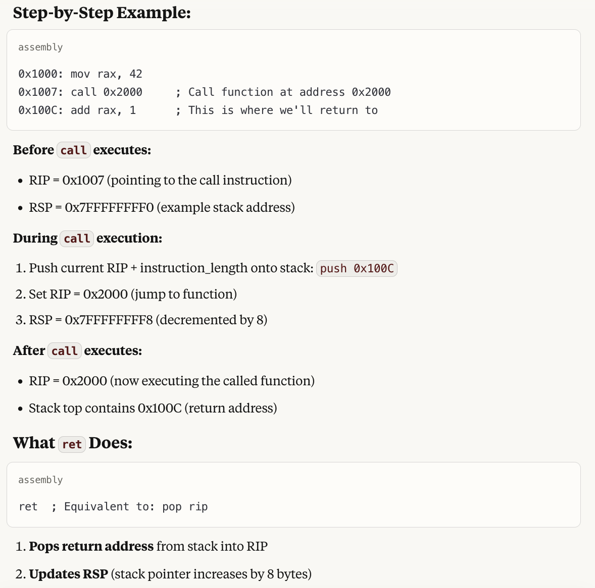

Computers are fascinating machines, and the vehicle for most of the innovation that is happening today. Most software engineers write application programs in high-level languages and thus don't appreciate the layers beneath.
This article delineates some details at the boundary of software and hardware. This article is inspired by the discussions that I had in the paper reading session where Vijay, Vinayak, Chirag, Himanshu and I read the paper A Comparison of Software and Hardware Techniques for x86 Virtualization. This paper was published by two VMware engineers while I was at VMware, and reading it again helped me brush up the main ideas behind software virtualization, specifically binary translation and how processors work in general.I realized that a lot of details about the hardware software interface is not taught well in univerisities - most of what I write here I learn while at job.
High level languages are compiled to assembly language which is then compiled to machine code. In this article we take a tour of how the processor interprets and executes the instructions. A computer has three prominent parts: (a) CPU (b) Memory (c) I/O. In this article we will study CPU and Memory, focusing on the hardware-software boundary.
Perhaps a quick exercise will help us get warmed up for things to come. Consider the following straightforward C program, in a file called test.c.
#include <stdio.h>
#include <stdlib.h>
int isPrime(int a) {
if (a < 2) return 0;
for (int i = 2; i < a; i++) {
if (a % i == 0) return 0;
}
return 1;
}
int main(int argc, char *argv[]) {
int number = atoi(argv[1]);
int result = isPrime(number);
printf("%d is %s prime.\n", number, result ? "" : "not");
return 0;
}
|
You can first compile it to assembly, by running gcc -S test.c and convert it to assembly. Here is the output on my system:
.file "test.c" .text .globl isPrime .type isPrime, @function isPrime: .LFB6: .cfi_startproc endbr64 pushq %rbp .cfi_def_cfa_offset 16 .cfi_offset 6, -16 movq %rsp, %rbp .cfi_def_cfa_register 6 movl %edi, -20(%rbp) cmpl $1, -20(%rbp) jg .L2 movl $0, %eax jmp .L3 .L2: movl $2, -4(%rbp) jmp .L4 .L6: movl -20(%rbp), %eax cltd idivl -4(%rbp) movl %edx, %eax testl %eax, %eax jne .L5 movl $0, %eax jmp .L3 .L5: addl $1, -4(%rbp) .L4: movl -4(%rbp), %eax cmpl -20(%rbp), %eax jl .L6 movl $1, %eax .L3: popq %rbp .cfi_def_cfa 7, 8 ret .cfi_endproc .LFE6: .size isPrime, .-isPrime .section .rodata .LC0: .string "" .LC1: .string "not" .LC2: .string "%d is %s prime.\n" .text .globl main .type main, @function main: .LFB7: .cfi_startproc endbr64 pushq %rbp .cfi_def_cfa_offset 16 .cfi_offset 6, -16 movq %rsp, %rbp .cfi_def_cfa_register 6 subq $32, %rsp movl %edi, -20(%rbp) movq %rsi, -32(%rbp) movq -32(%rbp), %rax addq $8, %rax movq (%rax), %rax movq %rax, %rdi call atoi@PLT movl %eax, -8(%rbp) movl -8(%rbp), %eax movl %eax, %edi call isPrime movl %eax, -4(%rbp) cmpl $0, -4(%rbp) je .L8 leaq .LC0(%rip), %rax jmp .L9 .L8: leaq .LC1(%rip), %rax .L9: movl -8(%rbp), %ecx movq %rax, %rdx movl %ecx, %esi leaq .LC2(%rip), %rax movq %rax, %rdi movl $0, %eax call printf@PLT movl $0, %eax leave .cfi_def_cfa 7, 8 ret .cfi_endproc .LFE7: .size main, .-main .ident "GCC: (Ubuntu 13.2.0-23ubuntu4) 13.2.0" .section .note.GNU-stack,"",@progbits .section .note.gnu.property,"a" .align 8 .long 1f - 0f .long 4f - 1f .long 5 0: .string "GNU" 1: .align 8 .long 0xc0000002 .long 3f - 2f 2: .long 0x3 3: .align 8 4: |
Further, by running gcc -o test test.c and then running hexdump on the output hexdump test, we get the following binary output (first column is byte offset, next 8 columns are successive bytes, expressed in hexadecimal numbers for clarity)
0000000 facf feed 000c 0100 0000 0000 0002 0000 0000010 0011 0000 0420 0000 0085 0020 0000 0000 0000020 0019 0000 0048 0000 5f5f 4150 4547 455a 0000030 4f52 0000 0000 0000 0000 0000 0000 0000 0000040 0000 0000 0001 0000 0000 0000 0000 0000 0000050 0000 0000 0000 0000 0000 0000 0000 0000 0000060 0000 0000 0000 0000 0019 0000 0188 0000 0000070 5f5f 4554 5458 0000 0000 0000 0000 0000 0000080 0000 0000 0001 0000 4000 0000 0000 0000 0000090 0000 0000 0000 0000 4000 0000 0000 0000 00000a0 0005 0000 0005 0000 0004 0000 0000 0000 00000b0 5f5f 6574 7478 0000 0000 0000 0000 0000 00000c0 5f5f 4554 5458 0000 0000 0000 0000 0000 00000d0 0460 0000 0001 0000 0118 0000 0000 0000 00000e0 0460 0000 0002 0000 0000 0000 0000 0000 00000f0 0400 8000 0000 0000 0000 0000 0000 0000 0000100 5f5f 7473 6275 0073 0000 0000 0000 0000 0000110 5f5f 4554 5458 0000 0000 0000 0000 0000 0000120 0578 0000 0001 0000 0018 0000 0000 0000 0000130 0578 0000 0002 0000 0000 0000 0000 0000 0000140 0408 8000 0000 0000 000c 0000 0000 0000 0000150 5f5f 7363 7274 6e69 0067 0000 0000 0000 0000160 5f5f 4554 5458 0000 0000 0000 0000 0000 0000170 0590 0000 0001 0000 0016 0000 0000 0000 0000180 0590 0000 0000 0000 0000 0000 0000 0000 0000190 0002 0000 0000 0000 0000 0000 0000 0000 00001a0 5f5f 6e75 6977 646e 695f 666e 006f 0000 00001b0 5f5f 4554 5458 0000 0000 0000 0000 0000 00001c0 05a8 0000 0001 0000 0060 0000 0000 0000 00001d0 05a8 0000 0002 0000 0000 0000 0000 0000 00001e0 0000 0000 0000 0000 0000 0000 0000 0000 00001f0 0019 0000 0098 0000 5f5f 4144 4154 435f 0000200 4e4f 5453 0000 0000 4000 0000 0001 0000 0000210 4000 0000 0000 0000 4000 0000 0000 0000 0000220 4000 0000 0000 0000 0003 0000 0003 0000 0000230 0001 0000 0010 0000 5f5f 6f67 0074 0000 0000240 0000 0000 0000 0000 5f5f 4144 4154 435f 0000250 4e4f 5453 0000 0000 4000 0000 0001 0000 0000260 0010 0000 0000 0000 4000 0000 0003 0000 0000270 0000 0000 0000 0000 0006 0000 0002 0000 0000280 0000 0000 0000 0000 0019 0000 0048 0000 0000290 5f5f 494c 4b4e 4445 5449 0000 0000 0000 00002a0 8000 0000 0001 0000 4000 0000 0000 0000 00002b0 8000 0000 0000 0000 02e8 0000 0000 0000 00002c0 0001 0000 0001 0000 0000 0000 0000 0000 00002d0 0034 8000 0010 0000 8000 0000 0068 0000 00002e0 0033 8000 0010 0000 8068 0000 0040 0000 00002f0 0002 0000 0018 0000 80b0 0000 0005 0000 0000300 8110 0000 0038 0000 000b 0000 0050 0000 0000310 0000 0000 0000 0000 0000 0000 0003 0000 0000320 0003 0000 0002 0000 0000 0000 0000 0000 0000330 0000 0000 0000 0000 0000 0000 0000 0000 0000340 8100 0000 0004 0000 0000 0000 0000 0000 0000350 0000 0000 0000 0000 000e 0000 0020 0000 0000360 000c 0000 752f 7273 6c2f 6269 642f 6c79 0000370 0064 0000 0000 0000 001b 0000 0018 0000 0000380 f8b8 6142 3635 6530 f3bc f8e9 1d7b a6d1 0000390 0032 0000 0020 0000 0001 0000 0000 000f 00003a0 0400 000f 0001 0000 0003 0000 0401 048f 00003b0 002a 0000 0010 0000 0000 0000 0000 0000 00003c0 0028 8000 0018 0000 04f0 0000 0000 0000 00003d0 0000 0000 0000 0000 000c 0000 0038 0000 00003e0 0018 0000 0002 0000 0000 0547 0000 0001 00003f0 752f 7273 6c2f 6269 6c2f 6269 7953 7473 0000400 6d65 422e 642e 6c79 6269 0000 0000 0000 0000410 0026 0000 0010 0000 80a8 0000 0008 0000 0000420 0029 0000 0010 0000 80b0 0000 0000 0000 0000430 001d 0000 0010 0000 8150 0000 0198 0000 0000440 0000 0000 0000 0000 0000 0000 0000 0000 0000460 43ff d100 0be0 b900 0be8 b940 0908 7100 0000470 008a 5400 0001 1400 0fff b900 001a 1400 0000480 0048 5280 07e8 b900 0001 1400 07e8 b940 0000490 0be9 b940 0108 6b09 020a 5400 0001 1400 00004a0 0be8 b940 07ea b940 0d09 1aca 7d29 1b0a 00004b0 0108 6b09 0088 3500 0001 1400 0fff b900 00004c0 0009 1400 0001 1400 07e8 b940 0508 1100 00004d0 07e8 b900 ffee 17ff 0028 5280 0fe8 b900 00004e0 0001 1400 0fe0 b940 43ff 9100 03c0 d65f 00004f0 03ff d101 7bfd a903 c3fd 9100 0008 5280 0000500 17e8 b900 c3bf b81f 83a0 b81f 03a1 f81f 0000510 03a8 f85f 0500 f940 0018 9400 c3a0 b81e 0000520 c3a0 b85e ffcf 97ff 1be0 b900 c3a8 b85e 0000530 03ea aa08 1beb b940 0009 9000 8929 9116 0000540 0008 9000 8508 9116 016b 7100 1108 9a89 0000550 03e9 9100 012a f900 0528 f900 0000 9000 0000560 4000 9116 0008 9400 17e0 b940 7bfd a943 0000570 03ff 9101 03c0 d65f 0030 9000 0210 f940 0000580 0200 d61f 0030 9000 0610 f940 0200 d61f 0000590 6425 6920 2073 7325 7020 6972 656d 0a2e 00005a0 0000 6f6e 0074 0000 0001 0000 001c 0000 00005b0 0000 0000 001c 0000 0000 0000 001c 0000 00005c0 0002 0000 0460 0000 0040 0000 0040 0000 00005d0 0578 0000 0000 0000 0040 0000 0000 0000 00005e0 0000 0000 0000 0000 0003 0000 000c 0002 00005f0 0014 0002 0000 0000 0090 0100 1000 0200 0000600 0000 0400 0000 0000 0000 0000 0000 0000 0000610 0000 0000 0000 0000 0000 0000 0000 0000 * 0004000 0000 0000 0000 8010 0001 0000 0000 8000 0004010 0000 0000 0000 0000 0000 0000 0000 0000 * 0008000 0000 0000 0020 0000 0050 0000 0058 0000 0008010 0002 0000 0001 0000 0000 0000 0000 0000 0008020 0004 0000 0000 0000 0000 0000 0018 0000 0008030 0000 0000 0000 0000 0018 0000 4000 0006 0008040 4000 0000 0000 0000 0000 0000 0001 0000 0008050 0201 0000 0e01 0000 5f00 7461 696f 5f00 0008060 7270 6e69 6674 0000 0100 005f 0017 0000 0008070 0200 0000 0300 e000 0008 0003 09f0 0000 0008080 5f03 686d 655f 6578 7563 6574 685f 6165 0008090 6564 0072 6909 5073 6972 656d 0d00 616d 00080a0 6e69 1200 0000 0000 08e0 0190 0000 0000 00080b0 0002 0000 010f 0010 0000 0000 0001 0000 00080c0 0016 0000 010f 0000 0460 0000 0001 0000 00080d0 001f 0000 010f 0000 04f0 0000 0001 0000 00080e0 0025 0000 0001 0100 0000 0000 0000 0000 00080f0 002b 0000 0001 0100 0000 0000 0000 0000 0008100 0003 0000 0004 0000 0003 0000 0004 0000 0008110 0020 5f5f 686d 655f 6578 7563 6574 685f 0008120 6165 6564 0072 695f 5073 6972 656d 5f00 0008130 616d 6e69 5f00 7461 696f 5f00 7270 6e69 0008140 6674 0000 0000 0000 0000 0000 0000 0000 0008150 defa c00c 0000 9101 0000 0100 0000 0000 0008160 0000 1400 defa 020c 0000 7d01 0200 0004 0008170 0200 0200 0000 5d00 0000 5800 0000 0000 0008180 0000 0900 0000 5081 0220 0c00 0000 0000 0008190 0000 0000 0000 0000 0000 0000 0000 0000 * 00081b0 0000 1801 0000 0000 0000 0100 6574 7473 00081c0 7200 3491 9416 5236 d202 d56e 4115 d487 00081d0 93ab cb3f b3bc 9a09 2636 6f0c 9428 16ca 00081e0 ad88 ac7f 58b2 c66f 66e9 04c0 d1d7 6bd1 00081f0 4f02 0558 7cff 7cb4 857a bdda 488b 2c89 0008200 ada7 ac7f 58b2 c66f 66e9 04c0 d1d7 6bd1 0008210 4f02 0558 7cff 7cb4 857a bdda 488b 2c89 0008220 ada7 ac7f 58b2 c66f 66e9 04c0 d1d7 6bd1 0008230 4f02 0558 7cff 7cb4 857a bdda 488b 2c89 0008240 61a7 b452 6a7e 8ad4 04ca 428c 82a4 6900 0008250 bf7c 6ca0 798a 11ca 5c6c 4bee 8234 1679 0008260 ada8 ac7f 58b2 c66f 66e9 04c0 d1d7 6bd1 0008270 4f02 0558 7cff 7cb4 857a bdda 488b 2c89 0008280 ada7 ac7f 58b2 c66f 66e9 04c0 d1d7 6bd1 0008290 4f02 0558 7cff 7cb4 857a bdda 488b 2c89 00082a0 ada7 ac7f 58b2 c66f 66e9 04c0 d1d7 6bd1 00082b0 4f02 0558 7cff 7cb4 857a bdda 488b 2c89 00082c0 44a7 9985 eb85 a4bd d297 ba4a ac74 375b 00082d0 7e81 6e32 abe1 0eff ff54 5d90 d88a f59d 00082e0 00ed 0000 0000 0000 00082e8 |
Our objective in rest of the article is to get some understanding how the bytes above are interpreted as instructions and executed by the processor.
A CPU, at the core, has a straightforward life cycle - fetch-decode-execute - instruction after instruction. In the next few paragraphs we elucidate on what it means.
In order to understand "fetch-decode-execute", we should visualize that the processor consists of registers, and some circuitry (called ALUs) to do operations on the values in registers. (Often the values to be operated upon come from main memory.)
An instruction is a sequence of bits. What else could it be! There is however an elaborate structure to the bits in the instruction, which is described by ISA (Instruction Set Architecture - look here for intel x8664 ISA for example.) of the processor. Typically, first few bits encode the operations (load vs store vs add vs multiply etc). Next few bits may specify first operand and subsequent few bits may specify second operand.
For instance, consider the following bit sequence:
On x86, the assembly corresponding to this machine code is: add rax, 34 i.e. add 34 to the contents of register rax. Here are some specific details:
So, the job of the processor is - fetch the next instruction from the memory, decode it and "execute" it - i.e. do what is specified in the instruction.
Great. So now we know what an instruction is. Along the way we also came to know that there are "registers" in the processor. Registers are like scratch spaces which a programmer can use.
It is the right time to understand registers a bit better.
Some details on registers here. Each register is a 64-bit (8-byte) storage space. They are of two types: (a) general purpose and (b) special purpose registers. A general purpose register is really like the scratch space to be used by the programmer to achieve some computation. A special purpose register has some specific purpose - they are meant to communicate some specific information to the rest of the processor.
There are 15 general purpose registers:
Then there are some special purpose registers. There are many of them, but in this article we will need to know of the following:
There are many more, but for the purpose of our discussion only the above registers will suffice.
Now that we have seen how a single instruction executes, it is easy to see that instructions can be stored one after the other in memory, fetched serially and executed. And that is, indeed, most of the execution. Once an instruction execution is done, RIP is incremented by the length of the current instruction and then the processor fetches-decodes-executes the next instruction.
Let's say content of address 0x12345678 is 01001000 10000011 11000000 00100010. Instead of writing human unfriendly bit sequence we will write it as "add rax, 34". Let's also say that at next address i.e. 0x1234567C, we have "add rbx, 22". We succinctly write this as:
A: add rax, 34
add rbx, 22
where A is a shorthand for 0x12345678. Initially, value of RIP is A, and thus "add rax, 34" gets executed. Post the execution of this instruction RIP changes to A + 4 where the next instruction resides. Thus, the next instruction gets fetched and executed.
The next concept we need to understand to appreciate fetch-decode-execute lifecycle is how function calls are implemented in the processors and the role of RSP.
If the concept of "function" did not exist in high level programming languages, then perhaps one could do without RSP. However, functions are integral to programming languages - they help us organize our code in logical groupings.
Now suppose that in your high level language you write a function func. At the time of writing this function func, you probably won't know which all functions can call this function. Maybe today, func1 and func2 can call this, and tomorrow someone might write a third function func3 which can call the function func. func itself can also call func (recursion). And when func is executing, it does not know who called it.
So, you have to compile the function func to assembly and then to machine code in a way that does not depend on who will call this function. Let's say the compiler (or even you!) compiles the function and you use a lot of registers - rax, rbx, rcx etc. Now, when function func1 calls you, that function too might be using the same registers, and once execution of func is finished, func1 will need those values. So, if code for func1 is executing and function call to func is made, then before starting to execute the code of func, all the registers should be saved somewhere, and when execution of func finishes, all the registers should be restored. The only place where we can save it is in memory. We refer to the set of registers as the "context" - so we say that context is saved in the stack or restored from the stack.
There can be long chain of function calls - func1 calling func2 calling func3 and so on. All the context that will be needed later needs to be saved, and then restored as needed (when return happens).
This whole problem is solved by having a concept of "stack" in the memory. For any given process (now what is a "process" will be more concretely discussed in a later section of this article), the kernel allocates some memory and the start of the address is stored in the register RSP. Then, before any "call" instruction ("call" is the assembly instruction for function call), the compiled code saves relevant registers - which it was using as scratch space - on the stack (i.e. starting at the values pointed to by RSP). "call" instruction automatically saves the current RIP, at the top of the stack, changes RIP to the argument provided in call, and updates RSP. Next instruction to execute will be of the callee since RIP has been updated. Similarly, on "ret" instruction ("ret" is the assembly instruction for returning from a function call), processor automatically restores updates RIP from the value at the top of the stack (it will be value of RIP we saved at the time of call). The assembly code in the caller then restores the registers previously saved from the stack.
And here is a quick example cooked up by claude
Above description should make clear that (1) Function call is not a software-only concept - the hardware supports it. However, were the hardware not supporting it, we can still have been implemented in software (assembly code could have done all the saving/restoring of the context and jump instruction could have been used instead of call and ret.), however, it would have resulted in slower execution of the programs. (2) RSP - the stack pointer is involved in implementing the saving/restore of the context on the stack, and stores the address of the top of the stack.
We had a brief look at the RIP earlier, and saw that in the linear execution of the instructions, RIP always gets incremented by the length of the currently executing instruction (Note that in some architectures, like x86, instruction length is variable; but in other architectures, like ARM, instruction length is fixed). Now, let's look at RIP in details and see the scenarios where it changes in non-linear fashion.
The value of RIP changes as per the following logic:
The first of the cases has been studied already. Let's look at the next scenarios.
if and for statements of high level languages are translated to a variety of jump instructions.
Consider the following C code from the paper:
int isPrime(int a) {
for (int i = 2; i < a; i++) {
if (a % i == 0) return 0;
}
return 1;
}
It translates to following assembly:
isPrime: mov %edi, %ecx ; %ecx = %edi (a)
mov $2, %esi ; i = 2
cmp %ecx, %esi ; is i >= a?
jge prime ; jump if yes
nexti: mov %ecx, %eax ; set %eax = a
cdq ; sign-extend
idiv %esi ; a % i
test %edx, %edx ; is remainder zero?
jz notPrime ; jump if yes
inc %esi ; i++
cmp %ecx, %esi ; is i >= a?
jl nexti ; jump if no
prime: mov $1, %eax ; return value in %eax
ret
notPrime: xor %eax, %eax ; %eax = 0
ret
In the above example, isPrime, nexti etc will all be addresses. When the processor executes "cmp %ecx, %esi" it compares the values in the registers %esi and %ecx, and sets or unsets a specific bit in a flags register RFLAGS depending on whether the two values are equal or not. Next when "jge prime" ("jump if greater than or equal") executes - then RIP is set to either the address called 'prime' if previous comparison was true (this info is now in flags register), or else RIP is incremented by the instruction length if previous comparison was false. So, the execution either jumps to some target or else continues linearly depending on the result of previous comparison.
Another phenomenon in which RIP changes to value other than RIP + instruction_length is when interrupt happens. When an interrupt happens (e.g. when you type in something on your keyboard or when disk I/O completes), current context is saved on the stack (just as it happens in function call) and RIP is assigned the address of interrupt handler. How does the processor know the address of the interrupt handler? The kernel needs to set that address at a specific location in memory when the machine is starting up.
We have already looked at call and ret instructions, they also lead to non-linear jumps in the value of RIP.
This ends the description of the fetch-decode-execute cycle of the processors. However, while we are at it, a few other concepts are in order.
Above "fetch-decode-execute" suggests that the order in which operations happen is: fetch instruction 1, decode instruction 1, execute instruction 1, fetch instruction 2, decode instruction 2, execute instruction 2, and so on.
However, the parts of the processor which need to do fetching, decoding and execution are different, and so while execution of a certain instruction is happening, the next instruction can get to decoding stage and the instruction next to that can get to fetch stage. That way, overall IPC (instructions per cycle) increases. So, the execution looks like this:
In this article we have discussed a 3 stage pipeline. In real life processors, pipeline has many stages - e.g. 12 to 20 stages.
Note that when instructions are to be executed one after the then the above scheme works well. However, if the pipeline encounters
a conditional jump instruction then what do we do? We don't know what instruction will be executed after the jump instruction till the
time jump instruction has finished execution. In such cases processors do "branch prediction" - they make a good guess about what
path the branch would take and do "speculative execution". We take care not to write anything to memory since that would be irreversible.
In case the guess turns out to be wrong, there is "pipeline flushing" - we redo the right branch path. Though branch mispredictions
are costly due to pipeline flushes, branch prediction is still worth it because for most workloads, it is easy to get 99%+ accuracy
since most branches almost always take a certain of the two directions e.g. in while i < 100 will for 100 times go in one
direction and then once in other direction.
Modern processors are much more complex. In particular, they are "superscalar" i.e. multiple instructions can be in execute stage
simultaneously as long as they don't have data dependence. E.g. if you have A = B + C and D = E * F then
the machine instructions for them can execute simultaneously.
Also, instructions need not be executed in the same order as they appear in the program. E.g. suppose you have following instructions:
1. load r1, [memory] // Takes 100+ cycles (cache miss) 2. add r2, r3, r4 // Takes 1 cycle, 3. mul r5, r6, r7 // Takes 1 cycle, 4. add r8, r1, r9 // Needs r1 from instruction 1
Since instrucions 2 and 3 will wait for 1, and they will be waiting for a long time, instruction 4 can execute before 2 or 3 since its execution does not depend on instrucions 1 or 2 or 3.
In the last section we studied the basics of processors - fetch, decode and execute. If there were only one process needing to run at a time, then that is all that we would need. However, we want to multi processing systems - where we time share the same processor between many processes, so that you can run a text editor, a web browser, and database server and a web server all simultaneously.
The key thing to note is that all the processes refer to memory addresses and they are compiled independently. Thus, if two processes
run together then they may read from or write to same memory location. That is not what we want - a process may write value
x to a memory location m, and moments later when it reads back the value, it may read y
since some othe process overwrote the value. To avoid this - we introduce the concept of "virtual memory".
In modern procesors, when a processor accesses a memory location address V, like in
load r1, V, RAM address V is not accessed - rather
V is treated as a "virtual address" and is translated to "physical address" P
which is then accessed in the main memory.
This translation is done by the processor itself - kernel code is not involved in the mechanics of translation. However kernel sets up "page tables" using which translation is done. So, we now look at this process in detail.
First, we consider the anatomy of a virtual address V.
Given a virtual address V, here is the process to find the physical address P corresponding
to it. We call this process "page table walk".
First, the procesor read the register CR3. This register is written to by the kernel at the time of context switch. We say that CR3 points to the root of the page table hierarchy. Imagine that there are beginning at the address CR3, there are 512 entries, each entry of 8 bytes. We will see which of these 1024 entries we want to read during page translation.
Then the the processor accesses the memory address CR3 + 8 * V[39:47] There are 9 bits in V[39:47] and since 2 ** 9 = 512, these 9 bits encode which of 512 entires in the page table root we want to read. Thus 8 bytes starting CR3 + 8 * V[39:47] is a certain page table entry.
So, now the processor read these 8 bytes, called PML4 entry (page map level 4 entry). Here is the structure of page table entry.
| Page Table Entry Structure | |
|---|---|
| Bits 63-52 | Available for OS use |
| Bits 51-12 | Physical address (40 bits) - points to next level or physical page |
| Bits 11-9 | Available for OS use |
| Bit 8 | Global (G) |
| Bit 7 | Page size (PS) - 0 for 4KB, 1 for larger pages |
| Bit 6 | Dirty (D) |
| Bit 5 | Accessed (A) |
| Bit 4 | Cache disable (PCD) |
| Bit 3 | Write-through (PWT) |
| Bit 2 | User/Supervisor (U/S) |
| Bit 1 | Read/Write (R/W) |
| Bit 0 | Present (P) |
For now we will ignore all the bits except for bits 51-12. These bits contain the start address of the next level of page table
hierarchy that we need to access. If this address is A3, the processor finds the next level page table entry by
the reading the 8 bytes starting A3 + 8 * V[30:38]. We call these 8 bytes as an PDPT entry
(page directory pointer table entry).
Again, if A2 is the content of bits 51-12 in PDPT entry, then the processor reads 8 bytes starting A2 + 8 * V[21:29], and we call this PDT entry (page directory table entry).
If A1 is the content of bits 51-12 in PDT page table entry, then the processor reads 8 bytes starting A1 + 8 * V[12:28], and we call this PT entry (page table entry).
Finally, if A0 is content of 51-12 in PT entry, then the processor reads the byte (or however may
bytes are needed to be read) from the address A1 + V[12:28]. In other words
A1 + V[12:28] is the physical address corresponding the original
virtual address V.
Here is a comprehensive diagram illustrating the page table walk, thanks to claude.
As would be clear from above description, a single virtual address access, can lead to multiple actual memory accesses
This is 6 memory accesses for a single load / store assembly instruction! So, the processors use caching - in a cache
called "Translation lookaside buffer", they cache the translation of V[12:47] thus avoiding all memory
accesses except the last one. (Even the last access could be cached in L1/L2 caches, but we are not going there)
From the above description it follows that CR3 - the address of the root of the page table hierarchy - is one per process. So, when a context switch from one process to another happen, the write to CR3 register by the kernel can be thought of as the precise point at which context switch happens:
void context_switch(struct task_struct *prev, struct task_struct *next) {
// Save current state
save_registers(prev);
// Switch page tables - this is the key step
if (prev->mm != next->mm) { // Different address spaces
load_cr3(next->mm->pgd); // Write new PML4 base to CR3
// Above intruction translates to something like mov %rax, %cr3
// This immediately changes the virtual address mapping
}
// Switch to new process's kernel stack
switch_to(prev, next);
}
|
Another thing to note is that when the write to CR3 happens then TLB is flushed, i.e. all the entries of TLB are invalidated, since new process will would have a different set of translations.
It is the responsibility of the kernel to ensure that virtual addresses from two different processes don't translate to the same physical address. Actually in some cases, two different process have same translations, and we see those use cases in the next section.
This is a good point to study "page fault". To understand that we need to look back at the structure of page table entry. Bit 0 there was P which stands for "present". This bit is 1 if the entry is valid and 0 if the entry is not
valid. If, during page walk, the processor encounters an entry which is not present, then it means that the translation of the
corresponding virtual address does not exit. Then the processor generates a "page fault" - i.e. saves the current state on the stack,
looks up the page fault handler address in IDT (interrupt descriptor table - which is set by kernel at boot time), switches execution to ring 0 (i.e. kernel mode) and executes the handler.
Why would page table entry not be present? Well, by default entries have to be not present. Virtual address space is very large - since we use bits 0-47 from virtual address, i.e. a total of 48 bits for address translation, total virtual space present with a process is 2 ** 48 = 256 TB. Most systems don't have that much physical address, so most virtual addresses won't have corresponding physical addresses. The processor thus needs a way to find what translations are present and what are not.
Another phenomenon to consider is the following. When the application program allocates a large amount of memory (say 1 GB), then
the kernel need not allocate physical memory for the whole 1 GB. It can just note down in its data structures that it has promised
1 GB of memory, starting at some virtual address V. When the application code accesses any address from V
to V + 1 GB, a page fault will be generated since P bit in page table entry would be 0. The kernel would then find that
it had allocated this address to the application code. So, it would find an available physical page (which is not allocated to another
process), set the page table entry (including setting P bit to 1) and jump back to the same instruction which caused the page fault.
This time, the instruction would succeed.
This is also a good place to study how fork sysetm call is implemented, at least in linux kernel. Before we study
fork, we need to know of bit 1 - the read/write bit in the structure of page table entry. If the bit is 0,
address translation will succeed only if it is happening during a read instruction. If address translation is happening during
a write instruction then a page fault would be generated.
Coming back to the fork system call, when a fork happens, both parent and child processes are supposed to have the view of the memory
that the parent had before the fork. If address a has content c in parent process, same should hold
true in child process. After the fork however, parent and child go their own way - updates by one are not reflected to the other.
One way to implement fork would to copy all the pages physical pages corresponding to the parent process, and create a fresh set of
page tables that contain the new translations and have CR3 point to the root of the new page table hierarchy. However, that would
mean copying large amounts of data, and what is worse - many times fork is followed by exec in the child
code, in which the child completely ignores the memory it received from the parents.
child
So, kernel instead follows a better scheme. A basic version of that scheme is that the kernel creates new page table entries for the child, in a way that all the address translations from the new set of tables are the same as the old translations. However, both in the parent and in the child, all entries are marked read-only. As long as the child and the parent processes only read the memory location, there is no problem. However, when someone attempts to write to a location, a page fault is generated (since PTE mentions the translation to be read only). In servicing the page fault, the kernel creates a fresh copy of the page that was attempted to be written to. Then, the PTEs of parent and child are updated so that the translations are now to different physical pages. Also, now both the entries are marked as read-write. And then the faulting instruction is re-attempted. This time it would succeed.
Note that the application code would be oblivious to all this. It attempted a write, and then write succeeded. We call the above the process as copy on write, or COW.
Finally, note that when an interrupt arrives, or a page fault happens, then application code (user mode code) stops executing and kernel code starts executing (from a prespecified address). On this switch, CR3 does not change - i.e. the process remains the same. So, there are virtual addresses which map to kernel code and data. However, we don't want user mode code to access this code and data, despite some virtual addresses mapping to it. To achieve this, we use bit 2 - user/supervisor bit of the structure of page table entry. When set to 1, it means that this entry can be used only during the kernel mode of execution. So, if a user code tries to accesss the virtual addresses corresponding to this entry, there would be a page fault.
This is an elegant way that avoids both copying the kernel code in all address spaces, as well as avoiding teh change of CR3 at user-kernel mode execution switch.
I hope you enjoyed reading this article as much as I enjoyed writing it.